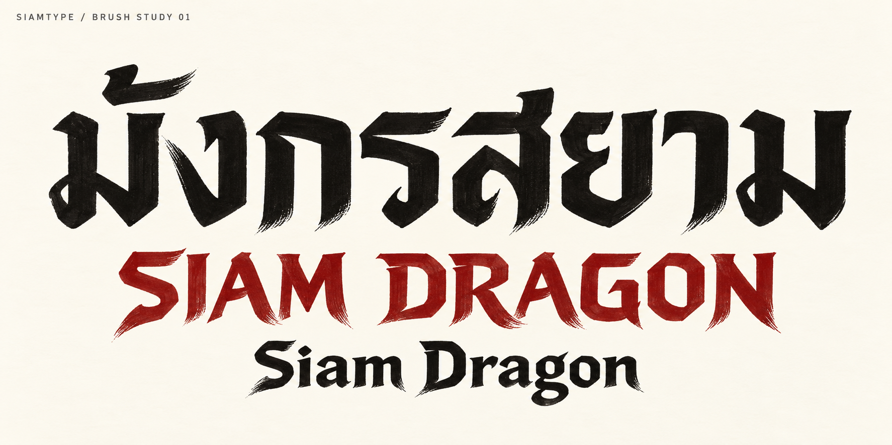
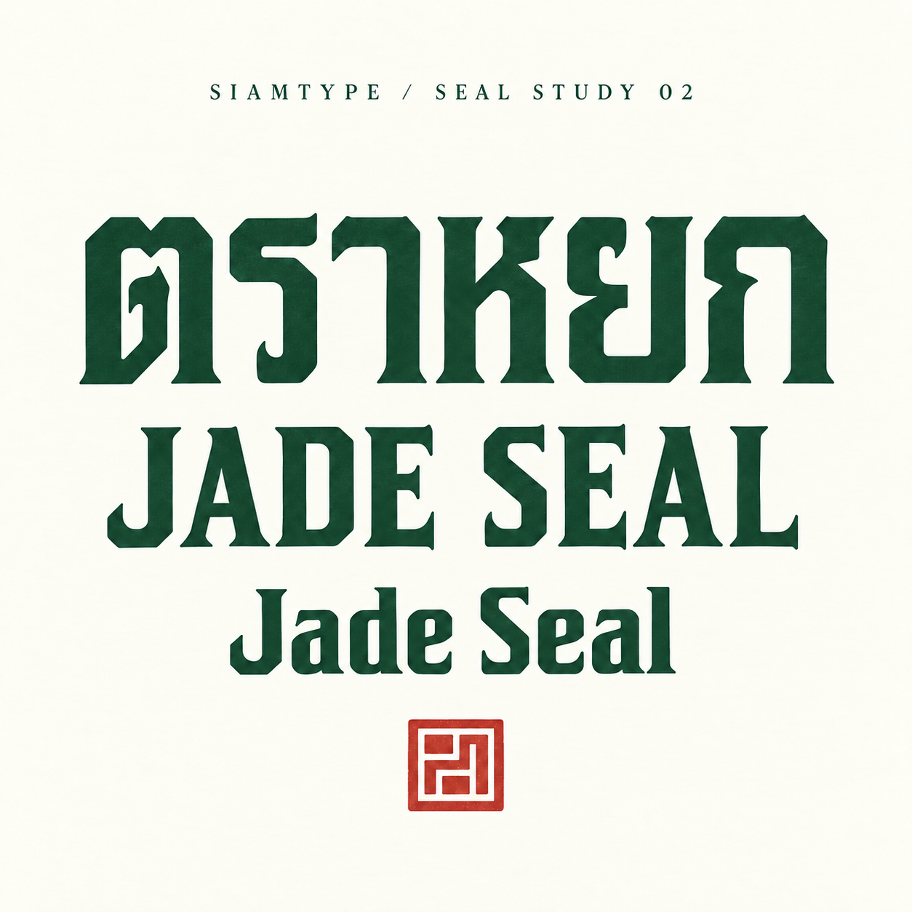

มังกรสยาม / Siam Dragon
เส้นหนักสลับปลายตวัด รอยพู่กันแห้ง และจังหวะเฉียงที่ให้ความเคลื่อนไหว วางทิศทางสำหรับหัวเรื่อง โปสเตอร์ และป้ายที่ต้องการพลัง
สำรวจภาษาของเส้นจากพู่กันและงานสลัก แล้วนำมาทดลองกับรูปอักษรไทยและอังกฤษ โดยยังให้แต่ละภาษาอ่านเป็นตัวเอง
สถานะ: แบบร่างภาพแนวคิด
ทั้งสองชุดยังไม่มีไฟล์ TTF / OTF ให้ติดตั้งหรือดาวน์โหลด และยังไม่เปิดขาย ภาพตัวอย่างไม่ได้ยืนยันว่ามีอักษรครบชุด

เส้นหนักสลับปลายตวัด รอยพู่กันแห้ง และจังหวะเฉียงที่ให้ความเคลื่อนไหว วางทิศทางสำหรับหัวเรื่อง โปสเตอร์ และป้ายที่ต้องการพลัง

เส้นตั้งหนา ช่องไฟภายในชัด มุมตัดและปลายเส้นบานเล็กน้อย ให้บุคลิกนิ่ง สง่า และเป็นระเบียบ แตกต่างจากแนวพู่กันของมังกรสยาม
ศิลป์สยาม Regular รุ่นทดลอง และละมุน Regular มีไฟล์ฟรีให้ลองใช้งานแล้ว ส่วนแบบแนวจีนในหน้านี้ยังต้องพัฒนาชุดอักษร สระ วรรณยุกต์ และตรวจการจัดวางก่อนเผยแพร่เป็นฟอนต์จริง